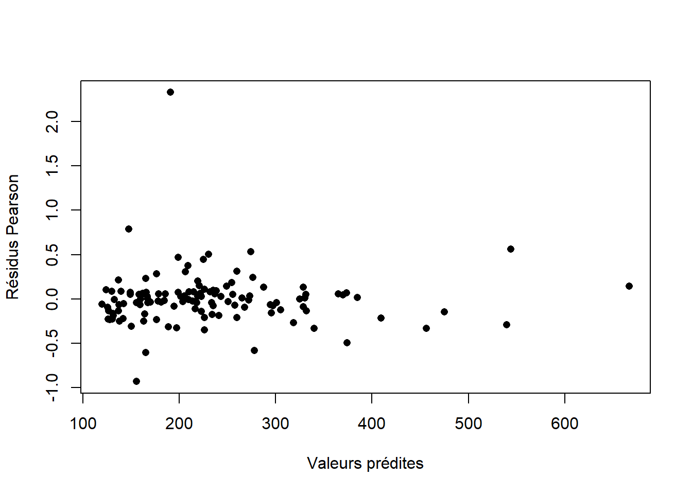
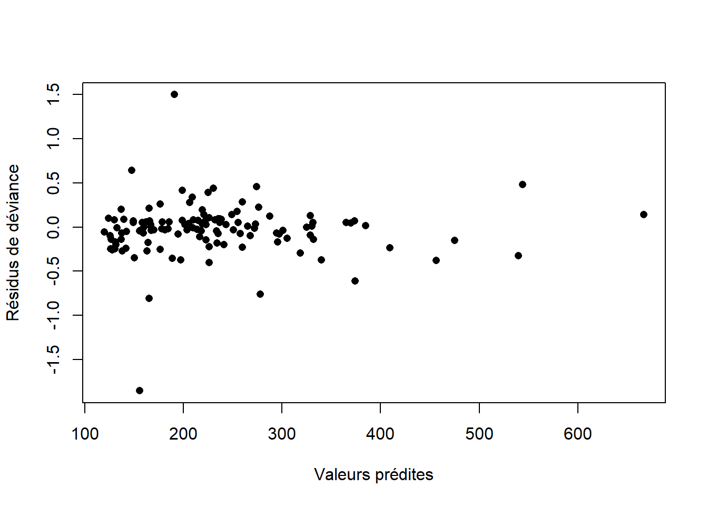
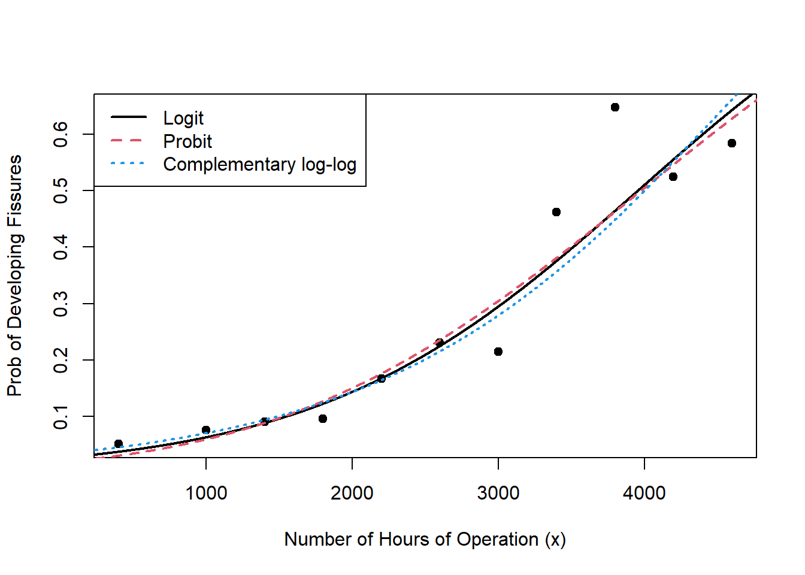

Code
library(knitr)library(knitr)Est-ce que les distributions suivantes font partie de la famille exponentielle linéaire? Si oui, écrire la densité sous la forme exponentielle linéaire, donner le paramètre canonique, le paramètre de dispersion, l’espérance et la variance de \(Y\) en termes de la fonction \(b()\) et la relation \(V()\) entre la moyenne et la variance.
a) Normale\((\mu,\sigma^2)\)
b) Uniforme\((0,\beta)\)
c) Poisson\((\lambda)\)
d) Bernoulli\((\pi)\)
e) Binomiale\((m, \pi)\), \(m>0\) est un entier et est connu (On considère \(Y^*=Y/m\)).
f) Pareto\((\alpha,\lambda)\)
g) Gamma\((\alpha,\beta)\)
h) Binomiale négative\((r,\pi)\) avec \(r\) connu (On considère \(Y^*=Y/r\)).
a)
\[\begin{align*} f_{Y}(y)&=\frac{1}{(2\pi\sigma^2)^1/2}\exp\left(-\frac{(y-\mu)^2}{2\sigma^2}\right),\, y\in\mathbb{R}\\ &=\exp\left(\frac{y\mu-\mu^2/2}{\sigma^2}-\frac{y^2}{2\sigma^2}-\frac{\ln(2\pi\sigma^2)}{2}\right),\, y\in\mathbb{R}. \end{align*}\]
Paramètre canonique: \(\theta=\mu\)
Paramètre de dispersion: \(\phi=\sigma^2\)
\(b(\theta)=\frac{\theta^2}{2}\)
\(\esp{Y}=\dot{b}(\theta)=\frac{\partial}{\partial\theta}\frac{\theta^2}{2}=\theta=\mu\)
\(\var{Y}=\phi\ddot{b}(\theta)=\sigma^2\frac{\partial}{\partial\theta}\theta=\sigma^2\)
\(V(\mu)=1\).
b) Uniforme\((0,\beta)\): non. Le domaine dépend du paramètre \(\beta\).
c) Poisson\((\lambda)\) : \[ \begin{aligned} f_{Y}(y;\lambda)&=\frac{\lambda^{y}e^{-\lambda}}{y!} \text{, pour }y\in \mathbb{N}^{+}\\ &=\exp\{y\ln \lambda - \lambda - \ln y!\}\\ f_{Y}(y;\theta,\phi)&=\exp\left\{\frac{y\theta - e^{\theta}}{\phi} - \ln y!\right\}. \end{aligned} \]
Paramètre canonique: \(\theta=\ln \lambda\)
Paramètre de dispersion: \(\phi=1\)
\(b(\theta)=e^{\theta}\)
\(\esp{Y}=\dot{b}(\theta)=\frac{\partial}{\partial\theta}e^{\theta}=e^{\theta}=\lambda\)
\(\var{Y}=\phi\ddot{b}(\theta)=\frac{\partial}{\partial\theta}e^{\theta}=e^{\theta}=\lambda\)
\(V(\mu)=\mu\).
d) Bernoulli\((\pi)\) \[ \begin{aligned} f_{Y}(y;\pi)&=\pi^{y}(1-\pi)^{1-y}1(y \in \{0,1\})\\ &=\exp\left\{y\ln\left(\frac{\pi}{1-\pi}\right)+\ln(1-\pi)\right\}1(y \in \{0,1\}).\\ \end{aligned} \]
Paramètre canonique: \(\theta=\ln\left(\frac{\pi}{1-\pi}\right)\)
Paramètre de dispersion: \(\phi=1\)
\(b(\theta)=\ln(1+e^{\theta})\)
\(\esp{Y}=\dot{b}(\theta)=\frac{\partial}{\partial\theta}\ln(1+e^{\theta})=\frac{e^{\theta}}{1+e^\theta}=\pi\)
\(\var{Y}=\phi\ddot{b}(\theta)=\frac{\partial}{\partial\theta}\frac{e^{\theta}}{1+e^\theta}=\frac{e^\theta}{(1+e^\theta)^2}=\pi(1-\pi)\)
\(V(\mu)=\mu(1-\mu)\).
e) Binomiale\((m, \pi)\), \(m>0\) est un entier et est connu. \[ \begin{aligned} f_{Y}(y;\pi)&=\begin{pmatrix} m\\y\end{pmatrix}\pi^{y}(1-\pi)^{m-y}1(y \in \{0,1,...,m\})\\ &=\exp\left\{y\ln\left(\frac{\pi}{1-\pi}\right)+m\ln(1-\pi)+\ln\begin{pmatrix} m\\y\end{pmatrix}\right\}1(y \in \{0,1,...,m\}).\\ \end{aligned} \] Dans cette représentation, on a \[\esp{Y}=m\pi \text{ et } \var{Y}=m\pi(1-\pi).\] Cette forme est moins utilisée car l’espérance de \(Y\) dépend de \(m\), le paramètre de dispersion. Souvent, on transforme les données. On utilise plutôt \(Y^{*}=Y/m\). Alors, pour ces données transformées, \[ \begin{aligned} f_{Y^{*}}(y;\pi)&=\exp\left\{my\ln\left(\frac{\pi}{1-\pi}\right)+m\ln(1-\pi)+\ln\begin{pmatrix} m\\my\end{pmatrix}\right\}, y \in \{0,1/m,...,1\}\\ &=\exp\left\{\frac{y\ln\left(\frac{\pi}{1-\pi}\right)+\ln(1-\pi)}{1/m}+\ln\begin{pmatrix} m\\my\end{pmatrix}\right\}, y \in \{0,1/m,...,1\}.\\ \end{aligned} \]
Paramètre canonique : \(\theta=\ln\left(\frac{\pi}{1-\pi}\right)\)
Paramètre de dispersion: \(\phi=1/m\)
\(b(\theta)=\ln(1+e^{\theta})\)
\(\esp{Y^*}=\dot{b}(\theta)=\frac{\partial}{\partial\theta}\ln(1+e^{\theta})=\frac{e^{\theta}}{1+e^\theta}=\pi\)
\(\var{Y^*}=\phi\ddot{b}(\theta)=\frac{1}{m}\frac{\partial}{\partial\theta}\frac{e^{\theta}}{1+e^\theta}=\frac{e^\theta}{m(1+e^\theta)^2}=\frac{\pi(1-\pi)}{m}\)
\(V(\mu)=\mu(1-\mu)\).
f) Pareto\((\alpha,\lambda)\): non.
g) Gamma\((\alpha,\beta)\) Soit \(Y\sim Gamma(\alpha,\beta)\). Alors, avec un peu de travail, la densité peut être écrite sous la forme exponentielle linéaire.
\[ f_{Y}(y;\alpha,\beta)=\frac{\beta^{\alpha}}{\Gamma(\alpha)}y^{\alpha-1}e^{-\beta y}, \] pour \(y>0\). On reparamétrise: \(\mu=\alpha/\beta=\esp{Y}\) et \(\alpha\), on a donc \(\beta=\alpha/\mu\) et
\[ f_{Y}(y;\alpha,\mu)=\frac{1}{y\Gamma(\alpha)}\left(\frac{\alpha y}{\mu}\right)^{\alpha}\exp\left\{-\frac{\alpha y}{\mu}\right\}. \]
Posons \(\theta=-1/\mu\), et \(a(\phi)=1/\alpha\), alors on trouve
\[ f_{Y}(y;\theta,\phi)=\exp\left\{\frac{y\theta +\ln(-\theta)}{\phi} +\alpha\ln\alpha+(\alpha-1)\ln y -\ln\Gamma(\alpha)\right\}. \]
Donc, \(b(\theta)=-\ln(-\theta)\) et \(a(\phi)=1/\alpha \Rightarrow \dot{b}(\theta)=\frac{-1}{\theta}=\mu\) et \(\ddot{b}(\theta)=\frac{1}{\theta^{2}}=\mu^{2}\). Finalement, \[ \esp{Y}=\frac{-1}{\theta}=\mu \text{ et } \var{Y}=\frac{1}{\alpha}\mu^{2}. \]
h) Binomiale négative\((r,\pi)\) avec \(r\) connu. On considère \(Y^*=Y/r\): \[ \begin{aligned} f_Y^*(y)&=\begin{pmatrix} r+ry-1\\ry\end{pmatrix}\pi^r(1-\pi)^{ry}, \text{ pour } y\in \{0,\frac{1}{r},\frac{2}{r},...\}\\ &=\exp\left(ry\ln(1-\pi)+r\ln\pi+\ln\begin{pmatrix} r+ry-1\\ry\end{pmatrix}\right). \end{aligned} \]
Paramètre canonique: \(\theta=\ln(1-\pi)\)
Paramètre de dispersion: \(\phi=1/r\)
\(b(\theta)=-\ln(1-e^\theta)\)
\(\esp{Y^*}=\dot{b}(\theta)=\frac{\partial}{\partial\theta}-\ln(1-e^\theta)=\frac{e^{\theta}}{1-e^\theta}=\frac{1-\pi}{\pi}\)
\(\var{Y^*}=\phi\ddot{b}(\theta)=\frac{1}{r}\frac{\partial}{\partial\theta}\frac{e^{\theta}}{1-e^\theta}=\frac{e^\theta}{r(1-e^\theta)^2}=\frac{(1-\pi)}{r\pi^2}\)
\(V(\mu)=\mu(\mu+1)\).
Quelles fonctions de lien peut-on utiliser pour un GLM avec une loi de Poisson?
\(\eta=\ln(\mu)\)
Le lien canonique est le lien log: \(\eta=\ln(\mu)\). On pourrait aussi utiliser d’autres fonctions de lien, telle que le lien identité \(\eta=\mu\), le lien inverse \(\eta=\frac{1}{\mu}\), mais le lien log est le plus approprié parce que son utilisation garantit une moyenne \(\mu\) positive, ce qui est nécessaire pour la loi de Poisson.
Quel est le lien canonique pour la loi gamma? Est-ce que ce lien est toujours approprié?
\(\eta=1/\mu\)
Le lien canonique pour la loi Gamma est le lien inverse \(\eta=1/\mu\). Comme la moyenne d’une loi Gamma est toujours positive, ce lien n’est pas toujours approprié parce qu’il ne restreint pas le domaine de \(\mu\) aux réels positifs. Le lien log serait plus approprié dans certains cas.
On suppose que \(Y_1,...,Y_n\) sont des v.a.s indépendantes et \(Y_i\sim Poisson(\mu_i)\). Pour chaque observation, on a une seule variable explicative \(x_i\).
a) Quel est le lien canonique?
b) Trouver les fonctions de score (à résoudre pour l’estimation des paramètres par maximum de vraisemblance)
a) \(\eta=g(\mu)=\ln(\mu)\)
b) \(\sum_{i=1}^n y_i-e^{\beta_0+\beta_1x_i}=0 \text{ et } \sum_{i=1}^n x_i(y_i-e^{\beta_0+\beta_1x_i})=0\)
a) \(\eta=g(\mu)=\ln(\mu)\)
b) On a \[ \ln(\mu_i)=\eta_i=\beta_0+\beta_1x_i. \]
La densité de la loi Poisson est \[ \begin{aligned} f_{Y_i}(y_i;\mu_i)&=\exp\left(y_i\ln\mu_i-\mu_i-\ln y_i!\right)\\ f_{Y_i}(y_i;\beta_0,\beta_1)&=\exp\left(y_i(\beta_0+\beta_1x_i)-e^{\beta_0+\beta_1x_i}-\ln y_i!\right). \end{aligned} \]
La fonction de vraisemblance et la log-vraisemblance sont donc :
\[ \begin{aligned} \mathcal{L}(\beta_0,\beta_1)&=\prod_{i=1}^n f_{Y_i}(y_i;\beta_0,\beta_1)=\prod_{i=1}^n\exp\left(y_i(\beta_0+\beta_1x_i)-e^{\beta_0+\beta_1x_i}-\ln y_i!\right)\\ \ell(\beta_0,\beta_1)&=\sum_{i=1}^n y_i(\beta_0+\beta_1x_i)-e^{\beta_0+\beta_1x_i}+\text{constante}. \end{aligned} \]
On maximise la log-vraisemblance:
\[ \begin{aligned} \frac{\partial}{\partial\beta_0}\ell(\beta_0,\beta_1)&=\sum_{i=1}^n y_i-e^{\beta_0+\beta_1x_i}\\ \frac{\partial}{\partial\beta_1}\ell(\beta_0,\beta_1)&=\sum_{i=1}^n y_ix_i-x_i e^{\beta_0+\beta_1x_i}\\ \end{aligned} \]
Donc, les équations à résoudre sont
\[ \begin{aligned} \sum_{i=1}^n y_i-e^{\beta_0+\beta_1x_i}&=0\\ \sum_{i=1}^n x_i(y_i-e^{\beta_0+\beta_1x_i})&=0.\\ \end{aligned} \]
Montrer que la déviance pour le modèle binomial est \[ D(y,\hat{\mu})=2\sum_{i=1}^n m_i \left[y_i\ln\left(\frac{y_i}{\hat{\mu}_i}\right)+(1-y_i)\ln\left(\frac{1-y_i}{1-\hat{\mu}_i}\right)\right]. \]
La déviance est \[ D(y;\hat{\mu})=2(\ell_n(\tilde{\theta})-\ell_n(\hat{\theta})). \]
Pour le modèle Binomial, on a \[ \begin{aligned} \ell_n(\theta)&=\sum_{i=1}^n\frac{Y_i\ln\left(\frac{\mu_i}{1-\mu_i}\right)+\ln(1-\mu_i)}{1/m_i}. \end{aligned} \]
Alors, dans le modèle complet, \(\mu_i=Y_i\) et on trouve \[ \begin{aligned} \ell_n(\tilde{\theta})&=\sum_{i=1}^n\frac{Y_i\ln\left(\frac{Y_i}{1-Y_i}\right)+\ln(1-Y_i)}{1/m_i}. \end{aligned} \] Dans le modèle développé avec le lien log, \(\mu_i=\hat{\mu}_i\) et on trouve \[ \begin{aligned} \ell_n(\hat{\theta})&=\sum_{i=1}^n\frac{Y_i\ln\left(\frac{\hat{\mu}_i}{1-\hat{\mu}_i}\right)+\ln(1-\hat{\mu}_i)}{1/m_i}. \end{aligned} \] Finalement, la déviance est \[ \begin{aligned} D(y;\hat{\mu})&=\sum_{i=1}^n\frac{Y_i\ln\left(\frac{Y_i}{1-Y_i}\right)+\ln(1-Y_i)}{1/m_i}-\frac{Y_i\ln\left(\frac{\hat{\mu}_i}{1-\hat{\mu}_i}\right)+\ln(1-\hat{\mu}_i)}{1/m_i}\\ &=\sum_{i=1}^n m_i\left[Y_i\ln\left(\frac{Y_i}{\hat{\mu}_i}\right)+(1-Y_i)\ln\left(\frac{1-Y_i}{1-\hat{\mu}_i}\right)\right]. \end{aligned} \]
Trouver les expressions des résidus de Pearson, d’Anscombe et de déviance pour la loi Gamma.
Pearson : \(r_{P_i} = (Y_i-\hat{\mu}_i)/\hat{\mu}_i\), Anscombe : \(r_{A_i} = (3(Y_i^{1/3}-\hat{\mu}_i^{1/3}))(\hat{\mu}_i^{1/3})\), Déviance : \(r_{D_i}=sign(Y_i-\hat{\mu}_i)\sqrt{2\left(\ln\left(\frac{\hat{\mu}_i}{Y_i}\right)+\frac{Y_i-\hat{\mu}_i}{\hat{\mu}_i}\right)}\)
Pour la distribution Gamma, on a \(V(t)=t^2\) et \(b(t)=-\ln(-t)\).
Résidus de Pearson: \[r_{P_i}=\frac{Y_i-\hat{\mu}_i}{\sqrt{\hat{\mu}_i^2}}=\frac{Y_i-\hat{\mu}_i}{\hat{\mu}_i}.\] Résidus d’Anscombe : \[ \begin{aligned} A(t)&=\int_{0}^{t} \frac{\text{d}s}{s^{2/3}}=3t^{1/3}\\ \dot{A}(t)&=\frac{1}{s^{2/3}}\\ r_{A_i}&=\frac{A(Y_i)-A(\hat{\mu}_i)}{\dot{A}(\hat{\mu}_i)\sqrt{V(\hat{\mu}_i)}}=\frac{3(Y_i^{1/3}-\hat{\mu}_i^{1/3})}{\hat{\mu}_i^{1/3}}. \end{aligned} \] Résidus de déviance : \[ \begin{aligned} D_i&=2\left(-\frac{Y_i}{Y_i}-\ln(Y_i)+\frac{Y_i}{\hat{\mu}_i}+\ln(\hat{\mu}_i)\right)\\ &=2\left(\ln\left(\frac{\hat{\mu}_i}{Y_i}\right)+\frac{Y_i-\hat{\mu}_i}{\hat{\mu}_i}\right)\\ r_{D_i}&=sign(Y_i-\hat{\mu}_i)\sqrt{2\left(\ln\left(\frac{\hat{\mu}_i}{Y_i}\right)+\frac{Y_i-\hat{\mu}_i}{\hat{\mu}_i}\right)}. \end{aligned} \]
Les données suivantes représentent des données de comptage, du nombre d’échec pour trois appareils médicaux (M1, M2 et M3) lors de tests de résistance sur 1000 appareils de chaque type et pour quatre niveaux de résistance mécanique différents (I, II, III, IV).
Device Stress Level |
I |
II |
III |
IV |
|---|---|---|---|---|
M1 |
6 | 8 | 18 | 10 |
M2 |
13 | 18 | 29 | 20 |
M3 |
9 | 8 | 21 | 19 |
À l’aide de la modélisation Poisson (lien canonique), évaluer s’il y a une différence significative entre les taux d’échec des appareils.
Il s’agit d’un modèle à deux facteurs, avec Device qui prend les trois niveaux M1, M2 et M3 et Stress qui prend quatre niveaux. Le niveau de base pour Device est M1 au Stress I. Une analyse de déviance permet de vérifier quels paramètres sont significatifs.
glm <- glm(Failures ~ Level*Machine,family=poisson,data=stresstest)
anova(glm)Analysis of Deviance Table
Model: poisson, link: log
Response: Failures
Terms added sequentially (first to last)
Df Deviance Resid. Df Resid. Dev Pr(>Chi)
NULL 11 35.844
Level 3 20.8567 8 14.987 0.0001127 ***
Machine 2 12.2154 6 2.772 0.0022256 **
Level:Machine 6 2.7719 0 0.000 0.8368866
---
Signif. codes: 0 '***' 0.001 '**' 0.01 '*' 0.05 '.' 0.1 ' ' 1qchisq(0.95, 6)[1] 12.59159qchisq(0.95, 2)[1] 5.991465Le modèle \[\text{Stress+Device+Stress.Device}\] est ajusté en premier. La différence de déviance par rapport au modèle plus simple \(\text{Stress+Device}\) est 2.7719 sur 6 degés de liberté, ce qui n’est pas significatif par rapport au quantile \(\chi^{2}_{(6,0.95)}=12.59\). Ainsi, le modèle \(\text{Stress+Device}\) est une simplification adéquate du modèle plus complexe. Si on teste la significativité des paramètres de déviance, on trouve que la différence de déviance est 12.2154 sur 2 degrés de liberté, ce qui est significatif parce que \(\chi^{2}_{(2,0.95)}=5.99\). À partir de cette analyse, on conclut qu’il y a une différence significative entre le taux d’échec et les différents appareils.
Les données pour cet exercice sot contenues dans le fichier BritishCar.csv (sep='';'') disponible sur le site du cours. On y trouve les montants de réclamations moyens pour les dommages causés au véhicule du détenteur de la police pour les véhicules assurés au Royaume-Uni en 1975. Les moyennes sont en livres sterling ajustées pour l’inflation.
| Variable | Description |
|---|---|
OwnerAge |
Âge du détenteur de la police (8 catégories) |
Model |
Type de voiture (4 groupes) |
CarAge |
Âge du véhicule, en années (4 catégories) |
NClaims |
Nombre de réclamations |
AvCost |
Coût moyen par réclamation, en livres sterling |
On s’intéresse à la modélisation du coût moyen par réclamation.
a) Ajuster un modèle de régression Gamma avec lien inverse pour la variable endogène AvCost. Inclure les effets principaux OwnerAge, Model et CarAge.
b) Quelle est l’espérance du coût moyen de la réclamation pour un détenteur de police âgé entre 17 et 20 ans, avec une auto de type A âgée de moins de 3 ans ?
c) Interpréter brièvement les coefficients pour la variable exogène OwnerAge.
d) Interpréter brièvement les coefficients pour la variable exogène Model.
e) Interpréter brièvement les coefficients pour la variable exogène CarAge.
f) Pour quelle combinaison de variables exogènes l’espérance du coût de réclamation est-elle la plus élevée? Calculer sa valeur.
g) Pour quelle combinaison de variables exogènes l’espérance du coût de réclamation est-elle la plus faible? Calculer sa valeur.
h) Quelle est la déviance pour ce modèle? Est-ce que le modèle semble adéquat?
i) Tracer le graphique des résidus de Pearson en fonction des valeurs prédites, des résidus d’Ascombe en fonction des valeurs prédites et des résidus de déviance en fonction des valeurs prédites.
j) Obtient-on les mêmes conclusions aux sous-questions a) à h) si on utilise un lien logarithmique plutôt que le lien inverse?
a) En R, on obtient
modinv <- glm(AvCost~OwnerAge+Model+CarAge,family=Gamma,data=Bcar)
summary(modinv)
Call:
glm(formula = AvCost ~ OwnerAge + Model + CarAge, family = Gamma,
data = Bcar)
Coefficients:
Estimate Std. Error t value Pr(>|t|)
(Intercept) 0.0033233 0.0004038 8.230 4.42e-13 ***
OwnerAge21-24 0.0006043 0.0004159 1.453 0.14908
OwnerAge25-29 0.0003529 0.0003933 0.897 0.37163
OwnerAge30-34 0.0011783 0.0004572 2.577 0.01130 *
OwnerAge35-39 0.0016372 0.0004990 3.281 0.00139 **
OwnerAge40-49 0.0012039 0.0004592 2.622 0.01000 **
OwnerAge50-59 0.0010998 0.0004511 2.438 0.01638 *
OwnerAge60+ 0.0012390 0.0004619 2.682 0.00845 **
ModelB -0.0002817 0.0004049 -0.696 0.48806
ModelC -0.0006502 0.0003906 -1.664 0.09893 .
ModelD -0.0018235 0.0003481 -5.239 7.96e-07 ***
CarAge10+ 0.0033776 0.0004747 7.115 1.24e-10 ***
CarAge4-7 0.0003393 0.0002723 1.246 0.21539
CarAge8-9 0.0017423 0.0003575 4.873 3.75e-06 ***
---
Signif. codes: 0 '***' 0.001 '**' 0.01 '*' 0.05 '.' 0.1 ' ' 1
(Dispersion parameter for Gamma family taken to be 0.1074529)
Null deviance: 27.841 on 122 degrees of freedom
Residual deviance: 11.511 on 109 degrees of freedom
(5 observations deleted due to missingness)
AIC: 1400.7
Number of Fisher Scoring iterations: 5b) On a utilisé un lien inverse, alors \(\esp{Y_i}=\frac{1}{\eta_i}.\) Puisque les variables explicatives prennent toutes leur niveau de base, on a que \(\hat{\eta}_i=\hat{\beta}_0=0.0033233\) et \[\widehat{\esp{Y_i}}=0.0033233^{-1}=300.91.\]
c) Puisqu’on a utilisé un lien inverse, un coefficient plus élevé implique une diminution de l’espérance du coût de la réclamation, alors qu’un coefficient négatif signifie une augmentation de cette espérance. Ici on observe que les sept coefficients sont positifs, alors la catégorie d’âge ayant une espérance de coût la plus élevée est la catégorie de base, 17-20 ans. Le coût moyen semble ensuite relativement élevé pour les jeunes entre 21 et 29 ans. La catégorie d’âge avec coût de réclamation minimal est 35-39 ans, puis la moyenne semble relativement stable pour les détenteurs de police plus âgés.
d) Les trois coefficients pour la variable modèle sont négatifs, ce qui signifie que les réclamations pour les véhicules de type A (niveau de base) sont moins élevées en moyenne que celles pour les autres types de véhicule. Les réclamations pour les véhicules du modèle D semblent particulièrement coûteuse car le coefficient est beaucoup plus grand en valeur absolue que les autres.
e) De la même façon, on observe que d’augmenter l’âge du véhicule diminue le coût moyen des réclamations.
f) Pour un détenteur de police entre 17 et 20 ans, avec un véhicule de type D âgé de un à 3 ans, on trouve que \[\widehat{\esp{Y_i}}=\frac{1}{\hat{\beta}_0+\hat{\beta}^{MODEL}_D}=\frac{1}{0.0033233-0.0018235}=666.76.\]
g) Pour un détenteur de police entre 35 et 39 ans, avec un véhicule de type A âgé de plus de 10 ans, on trouve que \[\widehat{\esp{Y_i}}=\frac{1}{\hat{\beta}_0+\hat{\beta}^{OWNERAGE}_{35-39}+\hat{\beta}^{CARAGE}_{10+}}=\frac{1}{0.0033233+0.0016372+0.0033776}=119.93.\]
h) La déviance \(D(y,\hat{\mu})=11.511\) est donnée dans la sortie R pour la sous-question a). On a que \[\frac{D(y,\hat{\mu})}{\hat{\phi}}=\frac{11.511}{0.1074529}=107.126,\] ce qui est très près de \(n-p'=109\). Le modèle semble donc adéquat.
i) Les résidus sont calculés avec les formules trouvées à la question 6. Il faut d’abord enlever les données manquantes du vecteur contenant les coûts moyens. On obtient les graphiques suivants.


j) a. Le modèle avec le lien logarithmique est
modlog <- glm(AvCost ~ OwnerAge+Model+CarAge,family=Gamma(link=log),data=Bcar)
summary(modlog)
Call:
glm(formula = AvCost ~ OwnerAge + Model + CarAge, family = Gamma(link = log),
data = Bcar)
Coefficients:
Estimate Std. Error t value Pr(>|t|)
(Intercept) 5.711739 0.103835 55.008 < 2e-16 ***
OwnerAge21-24 -0.108159 0.114547 -0.944 0.3471
OwnerAge25-29 0.005223 0.113170 0.046 0.9633
OwnerAge30-34 -0.288090 0.113170 -2.546 0.0123 *
OwnerAge35-39 -0.331420 0.114547 -2.893 0.0046 **
OwnerAge40-49 -0.280775 0.113170 -2.481 0.0146 *
OwnerAge50-59 -0.238136 0.113170 -2.104 0.0377 *
OwnerAge60+ -0.283521 0.113170 -2.505 0.0137 *
ModelB 0.057951 0.075447 0.768 0.4441
ModelC 0.154588 0.076115 2.031 0.0447 *
ModelD 0.472290 0.078497 6.017 2.43e-08 ***
CarAge10+ -0.735513 0.078497 -9.370 1.17e-15 ***
CarAge4-7 -0.111412 0.075447 -1.477 0.1426
CarAge8-9 -0.422538 0.076115 -5.551 2.02e-07 ***
---
Signif. codes: 0 '***' 0.001 '**' 0.01 '*' 0.05 '.' 0.1 ' ' 1
(Dispersion parameter for Gamma family taken to be 0.0910768)
Null deviance: 27.841 on 122 degrees of freedom
Residual deviance: 11.263 on 109 degrees of freedom
(5 observations deleted due to missingness)
AIC: 1398
Number of Fisher Scoring iterations: 7c-d-e. Puisqu’on a utilisé un lien logarithmique, on a un modèle multiplicatif. Si \(e^\beta>1\), alors l’espérance du coût augmente, alors que si \(e^\beta<1\) alors l’espérance du coût diminue. On peut donc tirer des conclusions similaires à celles en c), d) et e).
Pour un détenteur de police entre 25 et 29 ans, avec un véhicule de type D âgé de un à 3 ans, on trouve que \[\widehat{\esp{Y_i}}=\exp\left(\hat{\beta}_0+\hat{\beta}^{OWNERAGE}_{25-29}+\hat{\beta}^{MODEL}_D \right)=\exp(5.711739+0.005223+0.472290)=487.48.\] On note que cette valeur est beaucoup moins élevée que celle obtenue en f).
Pour un détenteur de police entre 35 et 39 ans, avec un véhicule de type A âgé de plus de 10 ans, on trouve que \[\widehat{\esp{Y_i}}=\exp\left(\hat{\beta}_0+\hat{\beta}^{OWNERAGE}_{35-39}+\hat{\beta}^{CARAGE}_{10+}\right)=\exp(5.711739-0.331420-0.735513)=104.04.\]
La déviance \(D(y,\hat{\mu})=11.263\) est donnée dans la sortie R pour la sous-question a). On a que \[\frac{D(y,\hat{\mu})}{\hat{\phi}}=\frac{11.263}{0.0910768}=123.66,\] ce qui est moins près de \(n-p'=109\) que pour le modèle avec le lien inverse. Le modèle semble donc moins adéquat.
On considère les données suivantes, qui contiennent le nombre \(Y_i\) de turbines sur \(m_i\) qui ont été fissurées après \(x_i\) heures d’opération.
| \(x_i\) | \(m_i\) | \(Y_i\) |
|---|---|---|
| 400 | 39 | 2 |
| 1000 | 53 | 4 |
| 1400 | 33 | 3 |
| 1800 | 73 | 7 |
| 2200 | 30 | 5 |
| 2600 | 39 | 9 |
| 3000 | 42 | 9 |
| 3400 | 13 | 6 |
| 3800 | 34 | 22 |
| 4200 | 40 | 21 |
| 4600 | 36 | 21 |
a) En utilisant un GLM binomial avec lien canonique, dériver les estimateurs des paramètres lorsque \(x_i\) est traité comme une variable exogène dichotomique avec 11 niveaux, et lorsque le prédicteur linéaire pour la donnée \(i\) est \[\eta_i=\beta_0+\beta_i, \text{ pour } i=1,...,11,\] avec la contrainte d’identifiabilité que \(\beta_1=0\).
b) En utilisant et un GLM binomial avec lien canonique, ajuster le modèle où le prédicteur linéaire est \[\eta_i=\beta_0+\beta_1 x_i, \text{ pour } i=1,...,11.\] Donner les estimations des paramètres et leur écart-type.
c) Refaire (b) en utilisant un lien probit. Donner les estimations des paramètres et leur écart-type.
d) Refaire (b) en utilisant un lien log-log complémentaire. Donner les estimations des paramètres et leur écart-type.
e) Comparer les prévisions (et leurs mesures d’incertitude) sous les trois modèles ajustés en (b), (c) et (d) pour une turbine qui était en opération pour 2000 heures.
f) Tracer un graphique pour montrer si les modèles en (b), (c) et (d) ajustent bien (ou non) les données. Commenter.
a) Si \(x_{i}\) est traité comme une variable catégorielle à 11 niveaux, le prédicteur linéaire est écrit comme \[ \eta_{i}=\beta_{0}+\beta_{i} \text{, } i=1,...,11 \]
et \(\beta_{1}=0\). La fonction de densité de la loi binomiale est
\[ f_{Y}(y_{i})=\begin{pmatrix} m_{i} \\ y_{i} \end{pmatrix}\pi_{i}^{y_{i}}(1-\pi_{i})^{m_{i}-y_{i}}, \]
qui peut être réécrite avec la représentation de la famille exponentielle linéaire : \[ f_{Y}(y_{i})=\exp\left[y_{i}\ln\left(\frac{\pi_{i}}{1-\pi_{i}}\right)+m\ln(1-\pi_{i})+\ln\begin{pmatrix} m_{i} \\ y_{i} \end{pmatrix}\right]. \]
Ainsi, le paramètre canonique est \(\theta_{i}=\ln\left(\frac{\pi_{i}}{1-\pi_{i}}\right)\) et le lien canonique est le lien logit. Ainsi,
\[ \begin{aligned} \eta_{i}&=\ln\left(\frac{\pi_{i}}{1-\pi_{i}}\right)=\beta_{0}+\beta_{i} \\ \pi_{i}&=\frac{e^{\eta_{i}}}{1+e^{\eta_{i}}}= \frac{e^{\beta_{0}+\beta_{i}}}{1+e^{\beta_{0}+\beta_{i}}}\\ \end{aligned} \]
L’expression sous la reparamétrisation est
\[ \begin{aligned} f_{Y}(y_{i})&=\begin{pmatrix} m_{i} \\ y_{i} \end{pmatrix}\left(\frac{e^{\beta_{0}+\beta_{i}}}{1+e^{\beta_{0}+\beta_{i}}}\right)^{y_{i}}\left(\frac{1}{1+e^{\beta_{0}+\beta_{i}}}\right)^{m_{i}-y_{i}}\\ &=\begin{pmatrix} m_{i} \\ y_{i} \end{pmatrix}\frac{e^{y_{i}(\beta_{0}+\beta_{i})}}{(1+e^{\beta_{0}+\beta_{i}})^{m_{i}}}\\ \end{aligned} \]
La vraisemblance \(L\) et la log-vraisemblance \(l\) sont montrées ci-bas :
\[ \begin{aligned} L(\beta_{0},...,\beta_{11};y_{1},...,y_{11})&=\prod_{i=1}^{11} \begin{pmatrix} m_{i} \\ y_{i} \end{pmatrix}\frac{e^{y_{i}(\beta_{0}+\beta_{i})}}{(1+e^{\beta_{0}+\beta_{i}})^{m_{i}}}\\ \ell(\beta_{0},...,\beta_{11};y_{1},...,y_{11})&=\sum_{i=1}^{11} \left[\ln\begin{pmatrix} m_{i} \\ y_{i} \end{pmatrix}+y_{i}(\beta_{0}+\beta_{i})-m_{i}\ln(1+e^{\beta_{0}+\beta_{i}})\right]\\ \end{aligned} \]
On a
\[ \begin{aligned} \frac{\partial \ell}{\partial \beta_{0}}&=\sum_{i=1}^{11} \left[y_{i}-m_{i}\frac{e^{\beta_{0}+\beta_{i}}}{1+e^{\beta_{0}+\beta_{i}}}\right]\\ \frac{\partial \ell}{\partial \beta_{i}}&=y_{i}-m_{i}\frac{e^{\beta_{0}+\beta_{i}}}{1+e^{\beta_{0}+\beta_{i}}} \text{, } i=2,...,11,\\ \end{aligned} \]
et \(\beta_{1}=0\) par contrainte du modèle. Les estimateurs du maximum de vraisemblance pour les paramètres sont obtenus en résolvant le système d’équations \(\frac{\partial \ell}{\partial \beta_{i}}=0,\) \(i=0,...,11\) :
\[ \begin{aligned} \sum_{i=1}^{11} \left[y_{i}-m_{i}\frac{e^{\hat{\beta}_{0}+\hat{\beta}_{i}}}{1+e^{\hat{\beta}_{0}+\hat{\beta}_{i}}}\right]&=0\\ y_{i}-m_{i}\frac{e^{\hat{\beta}_{0}+\hat{\beta}_{i}}}{1+e^{\hat{\beta}_{0}+\hat{\beta}_{i}}}&=0 \text{, } i=2,...,11,\\ \Rightarrow \hat{\beta}_{0}+\hat{\beta}_{i}=\ln\left(\frac{y_{i}}{m_{i}-y_{i}}\right)& \text{, } i=2,...,11,\\ \end{aligned} \]
En utilisant la première équation et en substituant \(\hat{\beta}_{0}+\hat{\beta}_{i}\) par \(\ln\left(\frac{y_{i}}{m_{i}-y_{i}}\right)\), \[ \begin{aligned} &y_{1}-m_{1}\frac{e^{\hat{\beta}_{0}}}{1+e^{\hat{\beta}_{0}}}+\sum_{i=2}^{11} \left[y_{i}-m_{i}\frac{\left(\frac{y_{i}}{m_{i}-y_{i}}\right)}{1+\left(\frac{y_{i}}{m_{i}-y_{i}}\right)}\right]=0\\ &y_{1}-m_{1}\frac{e^{\hat{\beta}_{0}}}{1+e^{\hat{\beta}_{0}}}+\sum_{i=2}^{11} \left[y_{i}-m_{i}\frac{y_{i}}{m_{i}}\right]=0\\ &y_{1}-m_{1}\frac{e^{\hat{\beta}_{0}}}{1+e^{\hat{\beta}_{0}}}=0\\ &\hat{\beta}_{0}=\ln\left(\frac{y_{1}}{m_{1}-y_{1}}\right)\\ &\hat{\beta}_{i}=\ln\left(\frac{y_{i}}{m_{i}-y_{i}}\right)-\hat{\beta}_{0}=\ln\left(\frac{y_{i}/(m_{i}-y_{i})}{y_{1}/(m_{1}-y_{1})}\right) \text{, } i=2,...,11.\\ \end{aligned} \]
Les estimations des paramètres du modèle sont obtenues avec R :
(beta0 <- log(y[1]/(m[1]-y[1]))) [1] -2.917771(beta <- c(0,log(y[-1]/(m[-1]-y[-1]))-beta0)) [1] 0.0000000 0.4122448 0.6151856 0.6740261 1.3083328 1.7137979 1.6184877
[8] 2.7636201 3.5239065 3.0178542 3.2542430Résultat :
\[ \hat{\beta}=(-2.9178, 0, 0.4122, 0.6152, 0.6740, 1.3083, 1.7138, 1.6185, 2.7636, 3.5239, 3.0179, 3.2542)^\top. \]
Pour valider la cohérence des résultats, on utilise la propriété d’invariance de l’estimation par maximum de vraisemblance. On vérifie que les estimations de \(\pi_{i}\) en utilisant la fonction expit sont bien \(\hat{\pi}_{i}=\frac{y_{i}}{m_{i}}\) :
(pi <- exp(beta0+beta)/(1+exp(beta0+beta))) [1] 0.05128205 0.07547170 0.09090909 0.09589041 0.16666667 0.23076923
[7] 0.21428571 0.46153846 0.64705882 0.52500000 0.58333333y/m [1] 0.05128205 0.07547170 0.09090909 0.09589041 0.16666667 0.23076923
[7] 0.21428571 0.46153846 0.64705882 0.52500000 0.58333333b) Le GLM binomial avec lien logit et prédicteur linéaire \(\eta_{i}=\beta_{0}+\beta_{1}x_{i}\), \(i=1,...,11\) est ajusté aux données avec R et la commande :
glm(cbind(y,m-y) ~ x,family=binomial) Les estimations des paramètres sont \(\hat{\beta}_{0}=-3.6070615\) et \(\hat{\beta}_{1}=0.0009121\), avec écart-type \(SE(\hat{\beta}_{0})=0.3533875\) et \(SE(\hat{\beta}_{1})=0.0001084\).
c) Le GLM binomial avec lien probit et prédicteur linéaire \(\eta_{i}=\beta_{0}+\beta_{1}x_{i}\), \(i=1,...,11\) est ajusté aux données avec R et la commande :
glm(cbind(y,m-y) ~ x,family=binomial(link=probit)) Les estimations des paramètres sont \(\hat{\beta}_{0}=-2.080\) et \(\hat{\beta}_{1}=5.230\times10^{-4}\), avec écart-type \(SE(\hat{\beta}_{0})=0.1852\) et \(SE(\hat{\beta}_{1})=5.973\times10^{-5}\).
d) Le GLM binomial avec lien log-log complémentaire et prédicteur linéaire \(\eta_{i}=\beta_{0}+\beta_{1}x_{i}\), \(i=1,...,11\) est ajusté aux données avec R et la commande :
glm(cbind(y,m-y) ~ x,family=binomial(link=cloglog)) Les estimations des paramètres sont \(\hat{\beta}_{0}=-3.360\) et \(\hat{\beta}_{1}=7.480\times10^{-4}\), avec écart-type \(SE(\hat{\beta}_{0})=0.3061\) et \(SE(\hat{\beta}_{1})=8.622\times10^{-5}\).
e) Les prévisions sont obtenues avec l’inverse de la fonction de lien. Pour le modèle avec lien canonique (modèle b), on trouve \[ \hat{y}_{2000}=\frac{e^{\hat{\beta}_{0}+2000\hat{\beta}_{1}}}{1+e^{\hat{\beta}_{0}+2000\hat{\beta}_{1}}}=0.1439472. \]
De façon alternative, la commande predict(modelb,data.frame(x=2000),type="response",se.fit=TRUE) est utilisée pour obtenir les prévisions et leur écart-type. Les prévisions et les écarts-types sont dans le tableau suivant. La probabilité de développer des fissures après 2000 heures d’opération est de 14.39 % selon le modèle b (écart-type de 2.08%). Cela est comparable à ce qui est obtenu avec le modèle log-log complémentaire (d) pour lequel la probabilité estimée est 13.36 % avec écart-type 2.03 %. La précision est un peu meilleure avec ce modèle vu la variance plus petite. La probabilité estimée avec le modèle probit avec (c) est plus élevée à 15.06 % avec écart-type de 2.06 %.
| Mesure | Model b (logit link) | Model c (probit link) | Model d (compl. log-log link) |
|---|---|---|---|
| \(\hat{y}_{2000}\) | 0.1439472 | 0.1506150 | 0.1436447 |
| \(SE(\hat{y}_{2000})\) | 0.0208026 | 0.0206215 | 0.0203080 |
f) La figure 5.4 montre le nuage des points avec les trois modèles ajustés. On l’a obtenu avec le code R suivant, où et sont les inverses des fonctions de lien correspondantes :
plot(x,y/m,pch=19,xlab="Number of Hours of Operation (x)", ylab="Prob of Developing Fissures")
j <- seq(0,4800,1)
lines(j,ilogit(coef(modelb)[1]+coef(modelb)[2]*j),lwd=2) lines(j,iprobit(coef(modelc)[1]+coef(modelc)[2]*j),lty=2,col=2,lwd=2) lines(j,icloglog(coef(modeld)[1]+coef(modeld)[2]*j),lty=3,col=4,lwd=2) legend("topleft",legend=c("Logit","Probit","Complementary log-log"), lty=c(1,2,3),col=c(1,2,4),lwd=rep(2,3)) 
Il est facile d’observer que l’ajuster est meilleur lorsque le nombre d’heures d’opération est plus petit. Il semble y avoir une variance croissante des observations avec la variable explicative. C’est attendu dans un GLM. Les trois lignes de modèles ajustés sont légèrement différentes. Le lien probit mène à une estimation plus basse dans les queues et une plus grande estimation dans le milieu du support de la variable explicative. Le modèle probit semble moins représentatif des données que les autres modèles. Le lien log-log complémentaire (d) prévoit des probabilités de fissures plus élevées dans les extrêmes. Cela semble être un meilleur ajustement pour les données, et ce, avec une variance des prévisions plus basse. La ligne du modèle avec lien canonique est entre les deux modèles. Cela pourrait être un modèle raisonnable pour les données.